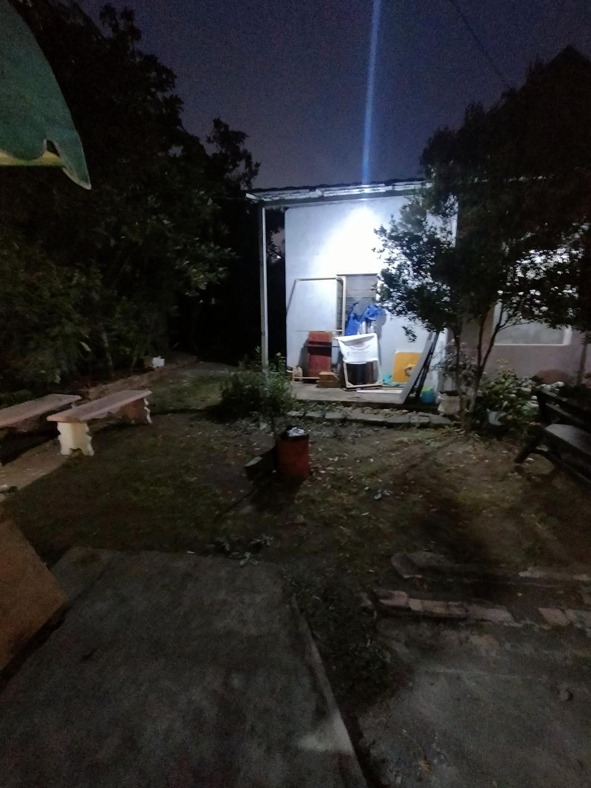
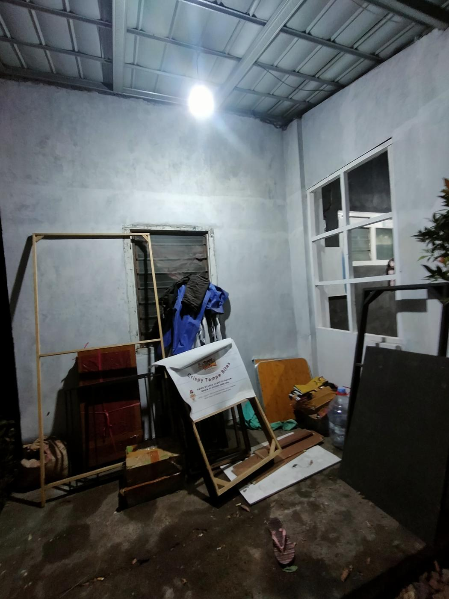
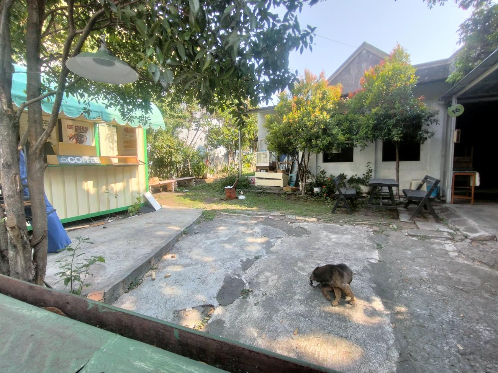
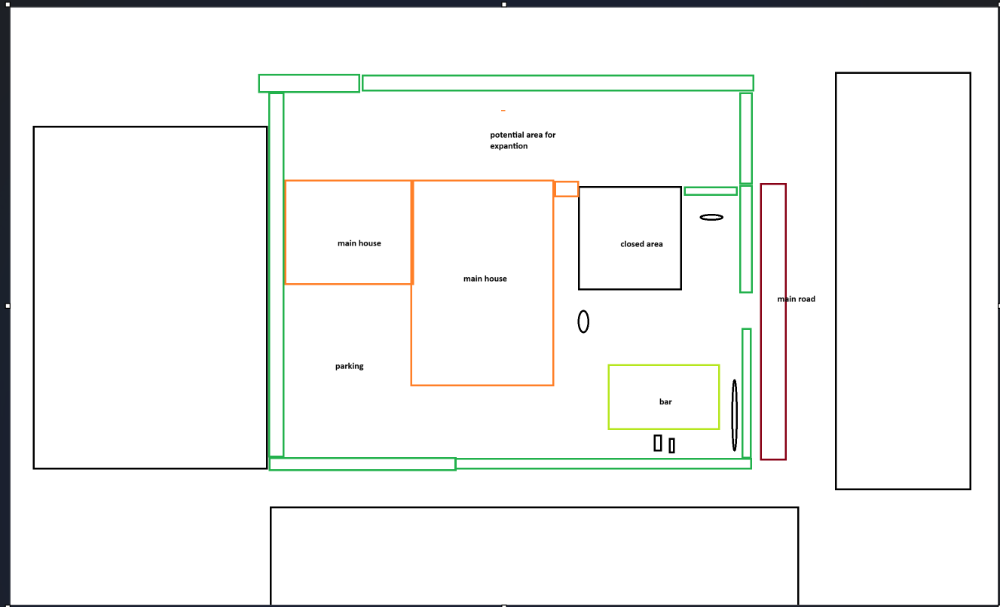
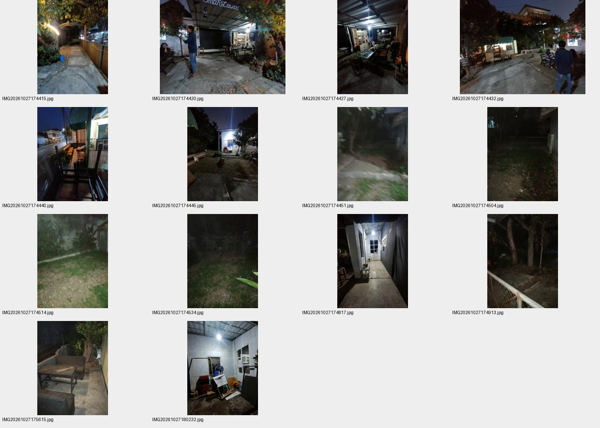
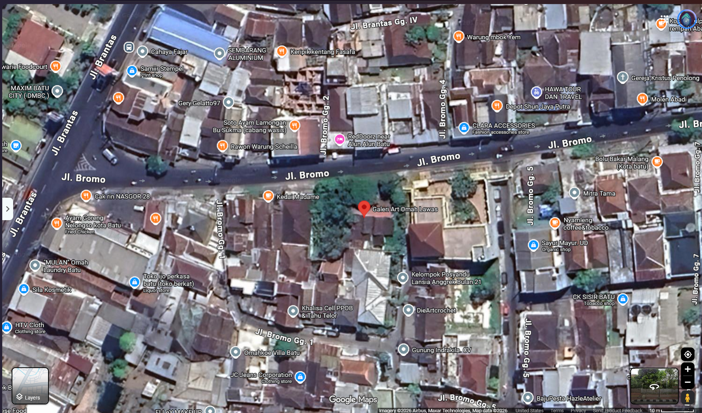
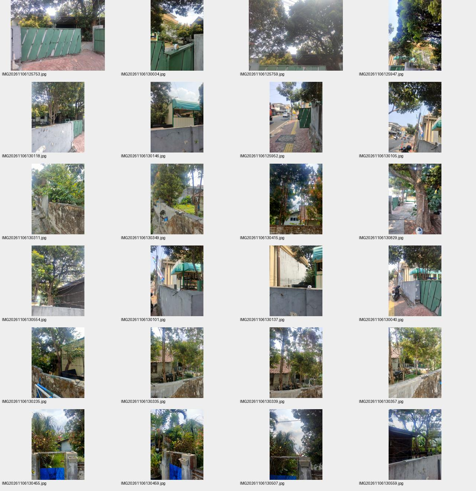
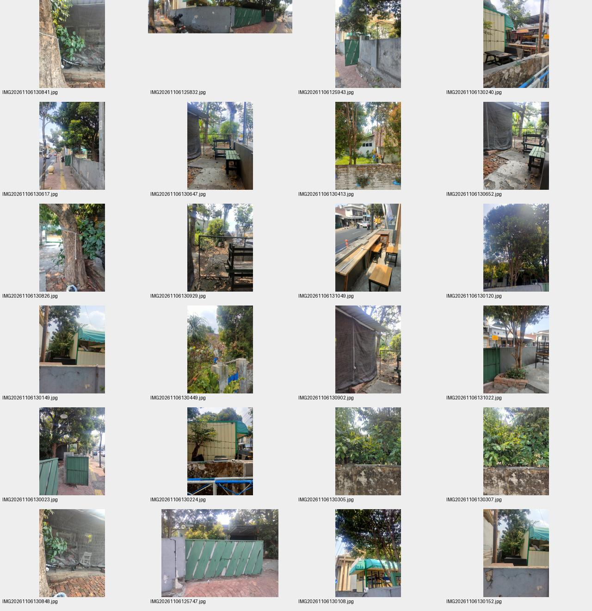
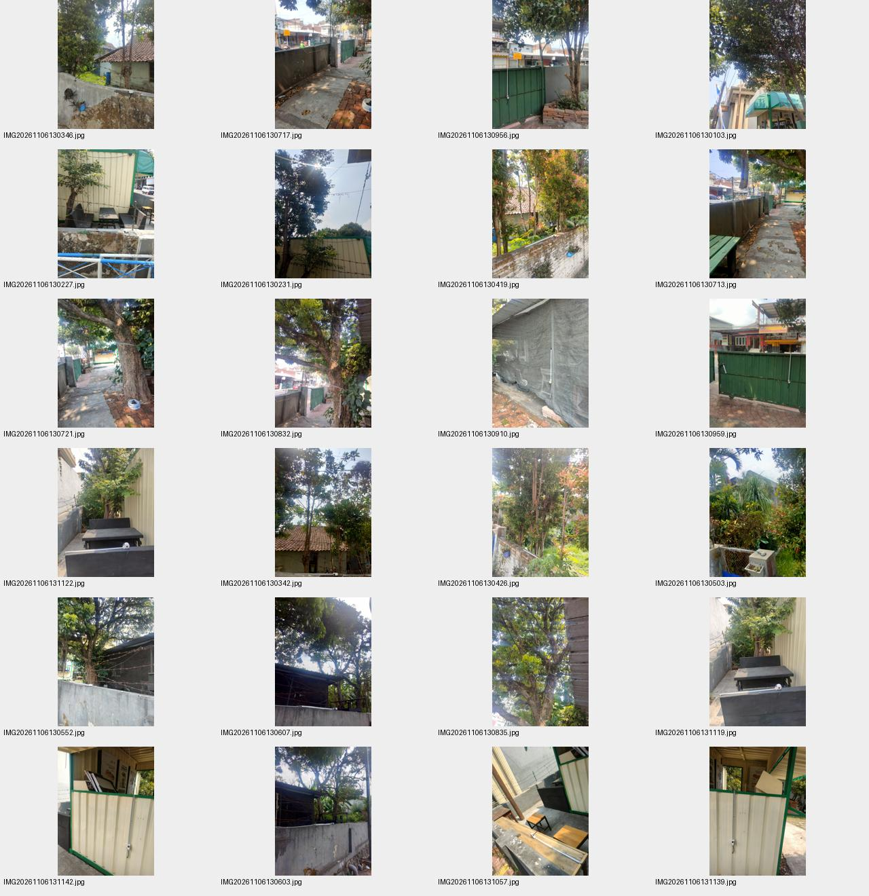
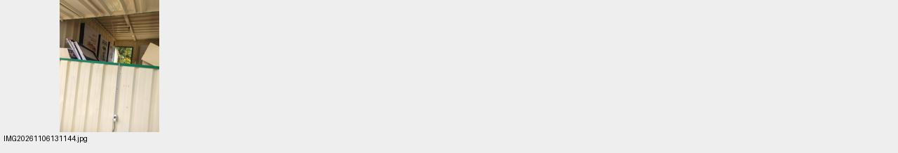

Orbit around the current-site blockout.
The roofed recess has a back wall, a window in the side wall and a concrete floor. Its depth is not measured. Intended future use: your Instagram photo spot; the model currently shows the existing space.


Reference for the uneven trees, grass and soil edge, utility opening and window arrangement. Model dimensions remain estimates.



Scale: approximately 85 pixels = 10 m in this screenshot (8.5 px/m). Tree canopy hides building edges and access points; the property boundary follows your hand-drawn green marks, with gaps interpolated.

Original photos are saved in the project. These contact sheets show the imported batch.



